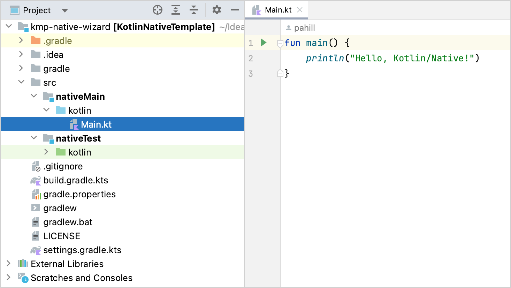
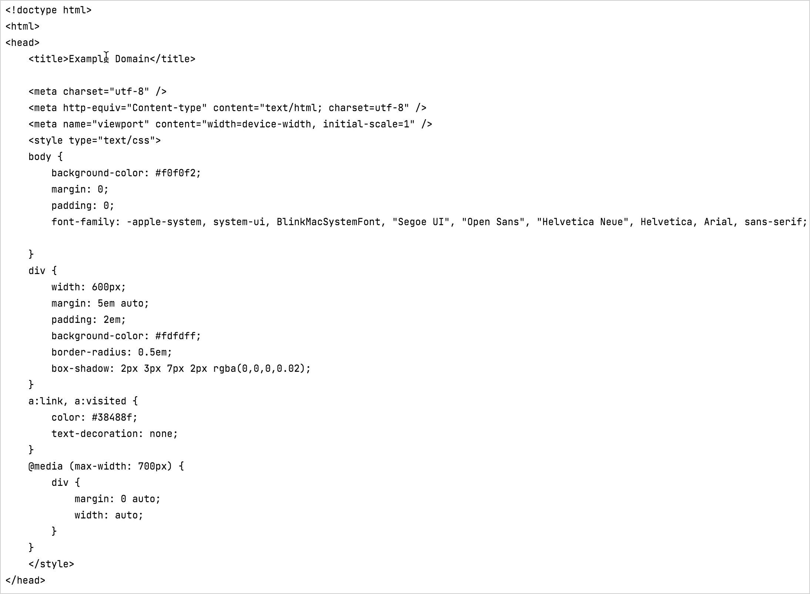

Create an app using C Interop and libcurl – tutorial
This tutorial demonstrates how to use IntelliJ IDEA to create a command-line application. You'll learn how to create a simple HTTP client that can run natively on specified platforms using Kotlin/Native and the
libcurl
library.
The output will be an executable command-line app that you can run on macOS and Linux and make simple HTTP GET requests.
Clone the
project template
by selecting
File
|
New
|
Project from Version Control
in IntelliJ IDEA.
Explore the project structure:

The template includes a project with the files and folders you need to get you started. It's important to understand that an application written in Kotlin/Native can target different platforms if the code does not have platform-specific requirements. Your code is placed in the
nativeMain
directory with a corresponding
nativeTest
. For this tutorial, keep the folder structure as is.
Open the
build.gradle.kts
file, the build script that contains the project settings. Pay special attention to the following in the build file:
kotlin {
val hostOs = System.getProperty("os.name")
val isArm64 = System.getProperty("os.arch") == "aarch64"
val isMingwX64 = hostOs.startsWith("Windows")
val nativeTarget = when {
hostOs == "Mac OS X" && isArm64 -> macosArm64("native")
hostOs == "Mac OS X" && !isArm64 -> macosX64("native")
hostOs == "Linux" && isArm64 -> linuxArm64("native")
hostOs == "Linux" && !isArm64 -> linuxX64("native")
isMingwX64 -> mingwX64("native")
else -> throw GradleException("Host OS is not supported in Kotlin/Native.")
}
nativeTarget.apply {
binaries {
executable {
entryPoint = "main"
}
}
}
}
Targets are defined using
macosX64
,
macosArm64
,
linuxX64
,
linuxArm64
, and
mingwX64
for macOS, Linux, and Windows. See the complete list of
supported platforms
.
The entry itself defines a series of properties to indicate how the binary is generated and the entry point of the applications. These can be left as default values.
C interoperability is configured as an additional step in the build. By default, all the symbols from C are imported to the
interop
package. You may want to import the whole package in
.kt
files. Learn more about
how to configure
it.
Create a definition file
When writing native applications, you often need access to certain functionalities that are not included in the
Kotlin standard library
, such as making HTTP requests, reading and writing from disk, and so on.
Kotlin/Native helps consume standard C libraries, opening up an entire ecosystem of functionality that exists for pretty much anything you may need. Kotlin/Native is already shipped with a set of prebuilt
platform libraries
, which provide some additional common functionality to the standard library.
An ideal scenario for interop is to call C functions as if you are calling Kotlin functions, following the same signature and conventions. This is when the
cinterop
tool comes in handy. It takes a C library and generates the corresponding Kotlin bindings, so that the library can be used as if it were Kotlin code.
To generate these bindings, create a library definition
.def
file that contains some information about the necessary headers. In this app, you'll need the
libcurl
library to make some HTTP calls. To create a definition file:
Select the
src
folder and create a new directory with
File | New | Directory
.
Name new directory
nativeInterop/cinterop
. This is the default convention for header file locations, though it can be overridden in the
build.gradle.kts
file if you use a different location.
Select this new subfolder and create a new
libcurl.def
file with
File | New | File
.
headers
is the list of header files to generate Kotlin stubs. You can add multiple files to this entry, separating each with a
\
on a new line. In this case, it's only
curl.h
. The referenced files need to be available on the system path (in this case, it's
/usr/include/curl
).
headerFilter
shows what exactly is included. In C, all the headers are also included when one file references another one with the
#include
directive. Sometimes it's not necessary, and you can add this parameter
using glob patterns
to fine-tune things.
headerFilter
is an optional argument and is mostly used when the library is installed as a system library. You don't want to fetch external dependencies (such as system
stdint.h
header) into the interop library. It may be important to optimize the library size and fix potential conflicts between the system and the provided Kotlin/Native compilation environment.
The next lines are about providing linker and compiler options, which can vary depending on different target platforms. In this case, they are macOS (the
.osx
suffix) and Linux (the
.linux
suffix). Parameters without a suffix are also possible (for example,
linkerOpts=
) and applied to all platforms.
The convention is that each library gets its definition file, usually with the same name as the library. For more information on all the options available to
cinterop
, see
the Interop section
.
Add interoperability to the build process
To use header files, make sure they are generated as a part of the build process. For this, add the following entry to the
build.gradle.kts
file:
The new lines are marked with
// NL
. First,
cinterops
is added, and then an entry for each
def
file. By default, the name of the file is used. You can override this with additional parameters:
val libcurl by creating {
definitionFile.set(project.file("src/nativeInterop/cinterop/libcurl.def"))
packageName("com.jetbrains.handson.http")
compilerOpts("-I/path")
includeDirs.allHeaders("path")
}
Now you have the library and the corresponding Kotlin stubs and can use them from your application. For this tutorial, convert the
simple.c
example to Kotlin.
In the
src/nativeMain/kotlin/
folder, update your
Main.kt
file with the following code:
import kotlinx.cinterop.*
import libcurl.*
@OptIn(ExperimentalForeignApi::class)
fun main(args: Array<String>) {
val curl = curl_easy_init()
if (curl != null) {
curl_easy_setopt(curl, CURLOPT_URL, "https://example.com")
curl_easy_setopt(curl, CURLOPT_FOLLOWLOCATION, 1L)
val res = curl_easy_perform(curl)
if (res != CURLE_OK) {
println("curl_easy_perform() failed ${curl_easy_strerror(res)?.toKString()}")
}
curl_easy_cleanup(curl)
}
}
As you can see, explicit variable declarations are eliminated in the Kotlin version, but everything else is pretty much the same as the C version. All the calls you'd expect in the
libcurl
library are available in the Kotlin equivalent.
Compile and run the application
Compile the application. To do that, call
runDebugExecutableNative
in the list of run Gradle tasks or use the following command in the terminal:
./gradlew runDebugExecutableNative
In this case, the
cinterop
generated part is implicitly included in the build.
If there are no errors during compilation, click the green
Run
icon in the gutter beside the
main()
method or use the
Alt+Enter
shortcut to invoke the launch menu in IntelliJ IDEA.
IntelliJ IDEA opens the
Run
tab and shows the output — the contents of
https://example.com
:

You can see the actual output because the call
curl_easy_perform
prints the result to the standard output. You could hide this using
curl_easy_setopt
.